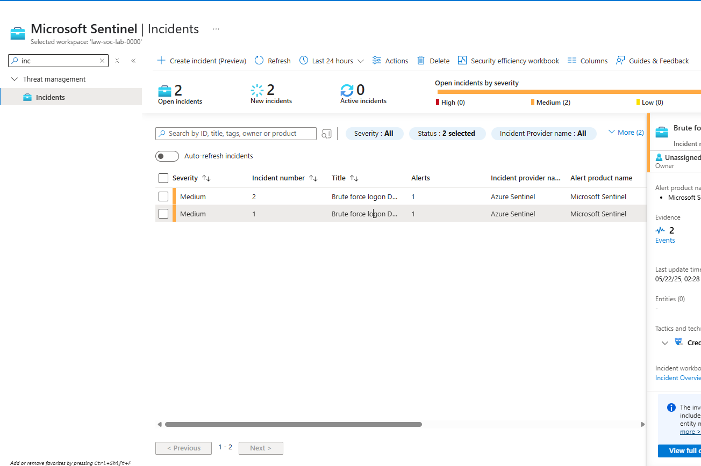

My Azure honeypot lab
What I built.
What I discovered.
Microsoft Sentinel SIEM Honeypot
This project drew questions from hiring managers during my security role interviews. It gave me a chance to walk through what I built, how I investigated the activity, and how I used Microsoft Sentinel in my Azure setup.
Want to recreate it? Follow my walkthroughAzure · Windows · Microsoft Sentinel · Log Analytics · KQL
Explore my evidence

Select a view above. Click the image to inspect it at full size.
Behind the project
From activity
to investigation.
I followed the trail from Windows security events to a detection query and Sentinel incidents. Explore each part of the project below.
What I built
An Azure honeypot environment connected to Log Analytics and Microsoft Sentinel for collecting and investigating Windows authentication events.
What I investigated
Failed authentication events using Event ID 4625. I reviewed the event records with KQL and grouped repeated attempts by account in five minute windows.
What my evidence shows
The screenshots show the query, failed login records, and two medium severity incidents. The detection rule returns account groups with more than five failed attempts in a five minute window.
These screenshots document the lab results. They do not include an attack map.
Want to follow the process in your own learning environment?
Open the step by step walkthrough